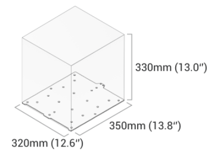

3D Printing
3D printing allows us to meet unique functionality requirements: from common applications to objects with specific mechanical properties, such as toughness, durability, and flexibility.
We are able to print materials including ABS, PLA, PETG, Wood and Flexible. For more info on 3D printing and avaiable materials contact us here.
Laser Engrave/Cut

When prototyping comes down to development effeciency, we provide the necessary resources to ensure fast and accurate results.
Laser cutting is just one of many tools in our toolbox that's commonly used when working with materials such as fabrics, leather, plywood and acrylics.
For more information or requests (ie. adding personal touches to designs or to other equipment) please contact us here.
CNC

CNC carving is ideal for precisely carving or cutting hard materials. Materials: hardwood, PCB, acrylic, POM, carbon fiber sheet, and many more materials
Lead Times
Lead times can vary based on design size, requirements, etc. Please contact us get to get more informataion about current lead times.
Work With Us!
Allowing us to work closely with you on the design parameters can result in a more effecient prototype. This includes stress analysis, simulations and design recommendations. For more information about consultations and contracting please email or call us directly.
What To Expect
We work hard to make sure that the resulting product is functionally within spec. Due to intrinstic properties of our development equipment, there may be minor imperfections in appearance (surfaces or edges, etc). For some designs, this may have an effect on it's functionality.
Materials
We stock materials based on necessity. Any special material requests will have to be approved and may require additional lead times.
Deliverables
Unless requested, design peices will be delivered unassembled. Special requests can be made if needed (leave supports attached, assemble, soldering, etc).
Other Resources
For more complex designs requiring more advance equipment, we may source design parts to other local companies to ensure that we bring your prototype to life as effeciently as possible.
*Prototyping Disclaimer: Please note that prototyping techniques may differ from manufacturing a final distributable product. This means that minor imperfections in appearance (surfaces or edges, etc) are common/expected. Although we do our best to mitigate this effect, due to the intrinsic properties of the development equipment, they can't be completed extinguished. For some designs, this may have an effect on it's functionality.